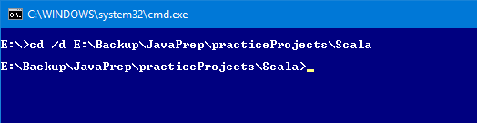
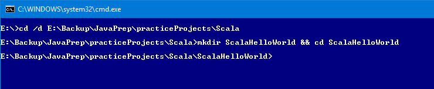
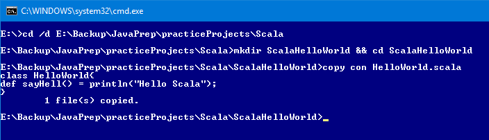
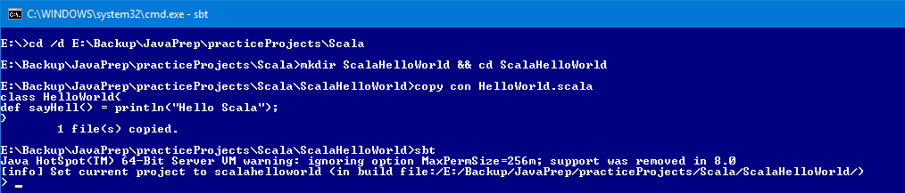
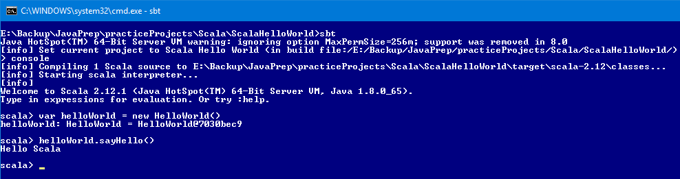
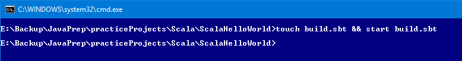

Go to the location where we want to create a project in command prompt

Create ScalaHelloWorld directory and go inside that directory

Create HelloWorld.scala file

open sbt prompt

type console in sbt prompt. This will compile .scala files present in ScalaHelloWorld directory. Create HelloWorld object and execute sayHello() method

Now make this project compatible to import into eclipse
Come out of scala - run - :quit
Come out of sbt - run - exit
Create build.sbt

Enter following content. Give one empty line between each lines
name := "Scala Hello World"
version := "0.1"
scalaVersion := "2.12.1"
Create project directory and create build.properties file in project directory